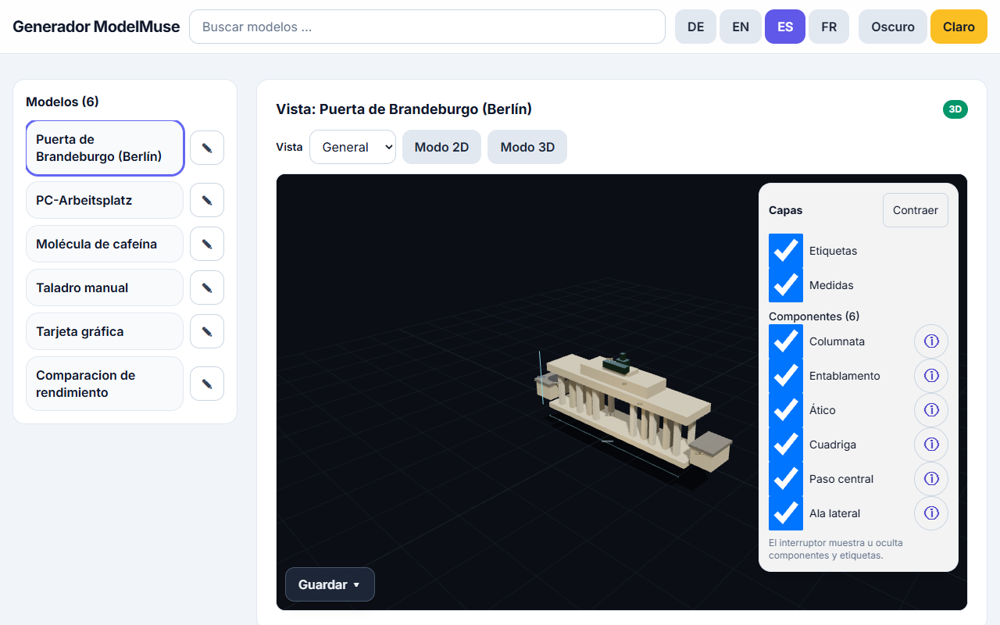

ModelMuse es una app estática de una sola página para ver y crear modelos educativos 3D y 2D directamente en el navegador. No hay backend ni instalación: basta un único archivo HTML. Necesita conexión a internet al arrancar (las bibliotecas 3D/de interfaz y la fuente se cargan desde CDN; las APIs de proveedores necesitan red).

La app en español: biblioteca a la izquierda, visor 3D en el centro, generador y panel de revisión a la derecha.
1. Funciones principales
6 laboratorios integrados: 5 × 3D (si-1, gpu-example, free-handbohrmaschine, chemie-koffein, arch-brandenburger-tor) más 1 demo 2D (demo-2d-chart). Cada lab explica sus componentes en tres idiomas (alemán, inglés, español).
Visor 3D interactivo: rotar/acercar, mostrar u ocultar componentes, overlay de información con explicaciones.
Renderizadores 2D: SVG, estilo Mermaid, gráficos, estilo D3 y estilo KaTeX – los términos de diagramas se derivan automáticamente a la vista 2D.
Ventanas acopladas: generar, cola, revisar e info de componente aparecen como overlays apilables y se pueden minimizar.
Biblioteca de sesión: ver, adoptar, importar, exportar y eliminar tus modelos – con historial (V1 … VX, máx. 10 versiones).
2. Generar modelos
Elige proveedor y modelo; introduce una clave API si se requiere (solo sesión, ver § 3).
Escribe una descripción (p. ej. «taladro manual, medio seccionado») y pulsa Generar.
Mientras un trabajo está en curso, se pueden enviar más trabajos – cada uno llega como modelo propio a la biblioteca.
Debajo de la selección de modelo, una estimación de coste/duración en vivo con promedios de telemetría muestra qué esperar.
Tu propia clave de OpenRouter (openrouter.ai/keys), solo sesión
Privacidad: las claves viven solo en memoria o – con consentimiento explícito – en sessionStorage. Nunca se escriben en el repositorio; la telemetría y los diagnósticos jamás contienen claves.
Profundidad de razonamiento:Standard / xhigh / max – max solo donde está documentado (1.3/wonder en Meta Muse, los tres slugs de OpenRouter); xhigh es el tope para modelos Contributor y la vía Baseten. Nunca se envían parámetros de presupuesto de tokens – intencionalmente no hay límite de longitud.
4. Cola con ETA
Generar y revisar comparten una sola cola. Cada combinación proveedor/modelo/razonamiento tiene una ETA (60 s por defecto, 240 s para configuraciones pesadas y nuevos modelos de OpenRouter). La cuenta atrás sigue corriendo tras la ETA («más lento de lo esperado · +{s} s»), informa la duración total y aborta en ETA + 120 s.
5. Exportar
Vistas 3D: GLB (textos de etiquetas/cotas conservados como extras userData) y captura PNG de la vista actual.
Vistas 2D: SVG (con corrección xmlns) y PNG.
Biblioteca de sesión: exportar la fuente del modelo con cabecera de procedencia (sin claves).
6. Telemetría (voluntaria) y diagnóstico
Tras una generación exitosa, un diálogo pregunta si compartir un bloque de telemetría (modelo, proveedor, razonamiento, prompt, códigos de uso/HTTP, duración – claves eliminadas, solo memoria, nunca persistente). Con valoración de estrellas y comentario, el bloque se puede copiar y reportar como issue mediante un botón-enlace. Además, copiar diagnóstico copia el diagnóstico depurado (modo, razonamiento, estado HTTP, uso de tokens incl. tokens de razonamiento, flag de reintento) – seguro para bug reports.
7. Límites
Un solo archivo, pero no offline: sin red (CDN/proveedores) la app no arranca – revisa la conexión y recarga.
WebGL2 obligatorio para 3D: sin WebGL2 hay una vista 2D de reserva (lista de piezas con medidas, marcada como auto-verificada con limitaciones).
Las estimaciones son estimaciones: los pronósticos de coste/duración son promedios de telemetría, no garantías.